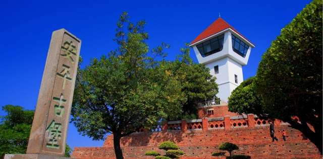

景點介紹
17世紀初荷蘭人以軍商結合的隊伍，於1624年占領今日安平，並建熱蘭遮城為其防禦要塞，全部工程完成於1634年。1662年鄭成功取荷蘭城後，改稱安平鎮，改內城為內府，臺人因此稱其為王城。清領時代，因台江陸浮失卻其重要性，加上清兵破壞熱蘭遮城建億載金城，故日漸荒廢。日治後重建，二戰後乃稱「安平古堡」。目前真正的荷蘭時期遺跡僅存古堡前方外城南城垣的磚牆。老榕盤根，無限滄桑，見證著近400年來的台江的歷史。
1975年配合觀光年計畫，台南市政府整修安平古堡範圍環境，在瞭望台上加一尖型屋頂，牆面漆成白色，就是現在我們看見的安平古堡的模樣。
